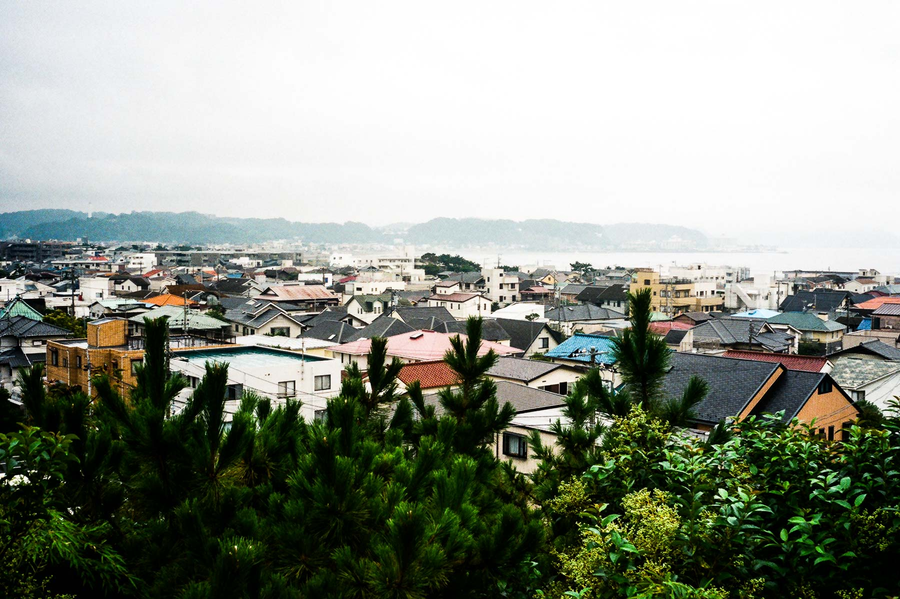

在江之島的第一晚睡得不錯，這天起床終於感覺到比較精神，築地的倦意已經離去了，開始第三天的緊密行程。我去到電車站乘搭江ノ電，在第一個站腰越下車。
腰越
腰越是鄰近江之島的小漁港，盛產白飯魚，昨晚吃的可能也是在這裏上岸呢！在腰越站下車，前往今天第一個景點：龍護山滿福寺。
我對滿福寺的歷來由來認識不多，但知道在這裏埋藏了一個悲劇。源義經這三字，在日本人心目中是相等於悲劇人物。他是日本平安時代河內源氏的武士，為源賴潮的異母弟弟。源氏在源平合戰之中滅掉平家，源義經雖然功勞不少，但卻受哥哥源賴潮懷疑，戰後源義經回到鎌倉途經腰越，為表忠心寫下腰越狀。可是最後也未能獲得賴朝的信任，最後更走上逃亡自刎之路。
不知是否太早來到，寺院內空無一人，與御守和朱印無緣了。在離開之前，發現寺後是一個墓地。
離開滿福寺，向漁港的方向行走，過一過馬路，我便來了腰越的第二個景點：小動神社。
同樣，事前我對小動神社的歷史由來不太清楚，在神社外立了一個展板介紹：原來小動這個名稱由來是從山上隨風飄動美麗的「小動松樹」而來的；而小動神社相傳是源賴朝的大臣佐佐木盛綱在源平合戰時，從他家鄉近江國（現在的滋賀縣）請八王子宮來立神社的。看完歷史介紹後，便上樓梯來到小動神社。
我知道小動神社和小動岬這個地方，是因為太宰治曾經和愛人在這裏走到山上自殺，兩人吸食大量鎮靜催眠藥，太宰治本人自殺未遂，愛人田辺あつみ卻死亡。相信他當時看到的風景和下面這幅差不多？
我也不知道，但想著自殺的人心情沉重，趕快離開小動和腰越，去下一個比較開朗的景點邁進。
鎌倉高校前
因為男兒當入樽一炮而紅的海邊電車站，正是江ノ電的鎌倉高校前駅，後來我在網上閱讀有關以鎌倉舞台的電影，才知道黑澤明的《天國與地獄》也在這裏取景呢。
這個無人車站沒有任何設施，只是一個有瓦遮頭的候車站，車站的後面竟然是一個細小的墳場！
車站下車後，向前行不用一分鐘就到達這個「知名景點」，這裏充滿了中國和台灣遊客，大家都想做晴子嗎？
雖然江ノ電是12分鐘一班，但這個電車和車路交界的踏切，有很多車輛進出，交通頗為繁忙。當天所見的遊客不是很離譜，只是車輛停下或是沒有車才在路中心影相。
在車站望著鎌倉的海洋，心情怎能夠不舒暢呢？
極樂寺
去尋找完晴子小姐，我又乘搭江ノ電，往鎌倉方向的第三個站下車：極樂寺駅。
初初認識極樂寺這個地方，純粹是因為一套日劇《倒數第二次的戀愛》，劇中主角住在極樂寺附近，他們每天返工放工一定會經過極樂寺駅，車站也展出劇集海服和演員簽名！
其後看是枝裕和的《海街diary》，看到木造長長的車站，我一眼便認出極樂寺駅。
從極樂寺駅下車向上斜坡走一條短路，過對面便是極樂寺，亦也是《海街diary》食堂老闆娘喪禮的場景。
極樂寺有七百多年歷史，在1259年由北条重時創立。寺的出入口很細小，需要屈下身子才能進出，寺內不准拍攝，只好影一影門口。
離開極樂寺之後，再一次乘搭往鎌倉方向的江ノ電，穿過極樂洞（隧道）後，在長谷駅下車。
長谷寺
在長谷駅下車後，走不遠路便是長谷寺。長谷寺很大，在門口附近可以放低朱印帳，離開時才拿走。
長谷寺的歷史超過一千二百年，由來的故事也很有趣：相傳在721年德道上人用一棵橡樹造了一個「兩體」的十一面觀音像，樹幹的一部份在大和國（今天的奈良縣）的長谷寺作祭典用途，而樹末端的一部份則放在大海中，祈求在有緣的地方出現。去到736年，樹未端的觀音像在相模國（今天神奈川縣的一部分）海邊出現，最後移到了鎌倉，並邀請德道上人來到鎌倉，創建長谷寺。
今天的長谷寺在海光山上，入了入口還要經過多條樓梯才到，長谷寺內供奉了一個巨大的十一面觀音像，整個觀音像都是鑲金的，很震撼。
觀音堂旁邊有一個觀音博物館，不過沒有進內參觀，買了一些紀念品後，在附近的散步道遠眺鎌倉風景。

離開觀音堂，下山回到門口，拿回朱印帳。我開始有點餓了，在附近的餐廳坐下吃午飯！
午餐又食白飯魚哈哈哈哈哈

高德院
高德院是一間日本佛教淨土宗的寺院，供奉的是屹立在戶外的阿彌陀佛，又稱「鎌倉大佛」。這座佛像是全日本第二大的青銅佛像，重約93噸，聞說這座佛像在15世紀經歷過一場大海嘯。

高德院和一般的寺院很不同，由於佛像在戶外，這裏沒有實際「廟宇」，佛像旁邊只有辦事處、展板等等。
這尊青銅佛像是中空的，你可以進入佛像的肚裏參觀。
小插曲：鎌倉文學館
去完高德院之後，我來到附近的鎌倉文學館，可是到達後發現這天是10月唯一一日定休日，非常可惜！
光則寺
由於文學館摸門釘，突然多了時間，便去了長谷寺附近的光則寺。光則寺對面是一間幼稚園，剛好經過是放學的時間，很多家長都踩著單車接小朋友放學。
光則寺又是一個無人看管的寺院，入場也是自己入香油錢，裏面種了很多花朵和樹木，可惜10月不是季節。寺廟本身也不是很大和特別，逛了一會兒便離開了
由比ヶ浜海灘
原定今天的行程就此完畢，回到長谷駅，我突然想看看海邊的風景，所以就越過長谷駅的另一面，到了一個無人的海灘！
在由比ヶ浜海灘上，一個人都沒有，只有一群靜靜的雀鳥。
一人獨佔整個海灘，心情好得不知怎樣形容！
離開長谷
這天的行程都差不多了，離開長谷乘電車回江之島，在車站竟然看到兩張海報。
原來是川喜多映画博物館和鏑木清方記念美術館，這兩個館都在鎌倉駅附近一帶，原本沒有安排會去的，但看到有三船敏郎和黑澤明的展覽，突然提起興趣來。留待後天去鎌倉看看有沒有時間去吧！